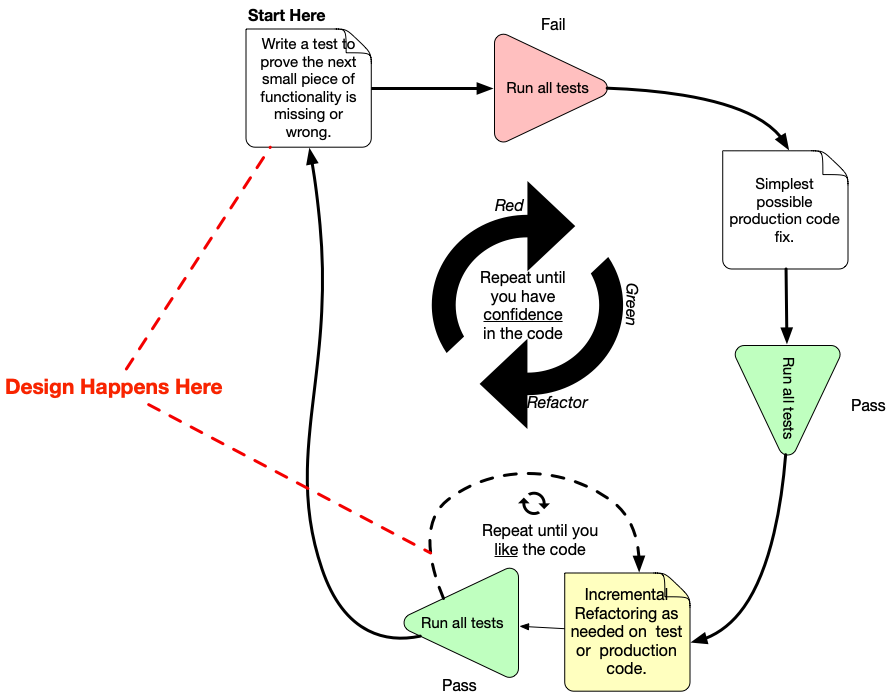
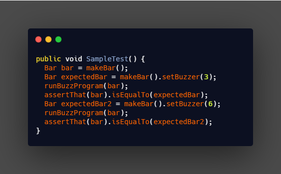
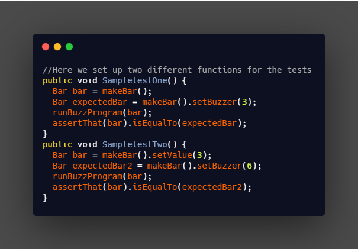

A process for when you write and run your tests. Following it makes it possible to have a very high test-coverage. Test-coverage refers to the percentage of your code that is tested automatically, so a higher number is better. TDD also reduces the likelihood of having bugs in your tests, which can otherwise be difficult to track down.
The TDD process consists of the following steps:
It can take some effort to learn well, but spending the time can pay off big. TDD projects often get a code-coverage of 90-100%, which means maintaining the code and adding new features is easy. This is because you have a large set of tests, so you can trust your code and changes work, and didn’t break any other code either.

Writing Efficient Code for your Unit Tests
F.I.R.S.T principles for clean tests
If you want to run multiple tests, for example, each test should have its own function. This is where the one test-one function notion comes into play. Consider the anatomy of this simple test:

Lumping the two tests together is confusing because you’re not sure whether the output from test one affects test two. Secondly, the starting state of test two is not explicit. The test runs regardless of the state test one finishes. There’s so much ambiguity to think about. Now think of a situation where you lumped about 10 items in a single test and something went wrong. It will be hard to identify which of the 10 items failed.
To fix this, we can set up two functions for each test as shown below
In this test, we have an explicit starting state for test B. Notice how this makes the tests easier to read and analyze.

Myths and Facts
|
Myths |
Facts |
|
Test Driven Development Slows Teams Down |
t’s true that when you first start using TDD, you’ll go slower than if you didn’t — but that’s only transactionally and temporarily true. Think of it this way; if I develop a feature in 1 hour, but spend 6 hours debugging it, that’s worse than spending 6 hours developing the feature through TDD, and 0 hours debugging it. Once that feature written through TDD gets to test; I am confident in it. I’m not as confident (or really confident at all) that the tester won’t find an issue if I hadn’t built the tests first. After six hours of debugging, it’s quite likely I missed something, I’m too far into the weeds to realize it, but a fresh set of eyes (our friendly neighborhood QA) will likely find it. Babies crawl before they walk, and they walk before they run; but no one ever suggests babies should start out running — there’s too many fundamentals that get missed if you try that. Another reality is that we all take it for granted that ‘hardening’ and ‘bug fixing’ sprints occur; and they occur far too often, by necessity. What you may not realize is that that time counts against development too. It’s an opportunity cost — if you have to spend entire sprints “hardening” or “bug fixing”, then you aren’t able to spend those sprints delivering features and value — you’re effectively shoring up the value you’ve already tried to create. Instead of doing that, why not build the feature through TDD? |
|
Test driven Development is a Testing methodology |
TDD is a development methodology. It’s a way to develop software to achieve the following:
The fact that there are tests is almost an accident of speech. When Test Driven Development was created, tests were the primary way to assert that behavior was a certain way; but we could have easily called it ‘example driven development’. TDD’s purpose is not to create tests; it’s to create code that’s easy to test and easy to change, and allow the creators to be confident when changing the code. It is not a replacement for the normal QA process; and not a replacement for system based tests —
though it can cut down drastically on the number of paths integration tests need to take to be useful. This is especially true of the brand of TDD I teach: FauxO
|
|
Unit Tests are a Development Methodology |
Unit tests are a testing methodology , not a development methodology. The difference is subtle but important. You don’t create Unit tests to determine the path software ought to take; you create unit tests after the software is created to verify it does what you think it does — to double check your work. TDD, on the other hand, is a development methodology. it’s a way of developing software that puts the test first; and the implementation later. This allows you to specify the behavior you expect, before the behavior itself is written. Unit Testing takes the opposite approach; where the tests are written after the code. The reality is when you create the Unit Tests after the code is written, the tests are more brittle and necessarily dependent upon all of the dependencies needed to run those tests. Unit Tests have their place — though I (and others) argue they should be shown the door in favor of good TDD practices and integration tests that don’t have to traverse every path through the application. |
|
Integration Tests + Unit Tests are Good Enough |
If you develop code with unit tests and integration tests, you’ll run into two problems pretty often:
In reality, Integration Tests + Unit tests are treated as good enough, when together, they’re about the most painful way you can test and develop software. (I believe in Integration tests — but they should be spared from having to go through the thousands of codepaths – that should be able to be handled through code that’s been developed through TDD. |
|
The Goal of TDD is 100% test coverage |
This is another one of those instances where ‘test’ was an unfortunate characterization for TDD. If some TDD is good, and more is better, why not go with the most TDD? 100%? Besides being infeasible (Frameworks and the icky-real world structures like the Network, Disk, Databases and the system clock get in the way), there is a point of diminishing returns; and those returns hit right about the time you try to deal with the Network, Disk, Databases, and the System Clock in an extensive fashion. This is why “Outside-In” TDD comes across as a brittle to change -> The Mocks and Stubs replace real-world implementations; and we frequently find ourselves wanting to change those implementations. Also, since TDD is a development methodology, it’s not trying to be a testing methodology — that’s a useful by-product of TDD, but it isn’t the goal. The goal is code that is built to be easily changeable, well-understood, and its behavior specified. |
|
You should aspire for 100% test coverage |
The reality is if you work with very expensive equipment, the value of 100% test coverage outweighs its cost. If your software deals with safety or security, that’s also true. If you’re writing a banking back-end — that is very likely true; but for the rest of us; you want enough test-coverage that you’re confident in making changes; but not so much that the tests get in your way of making change (again, brittle tests make code hard to change). |